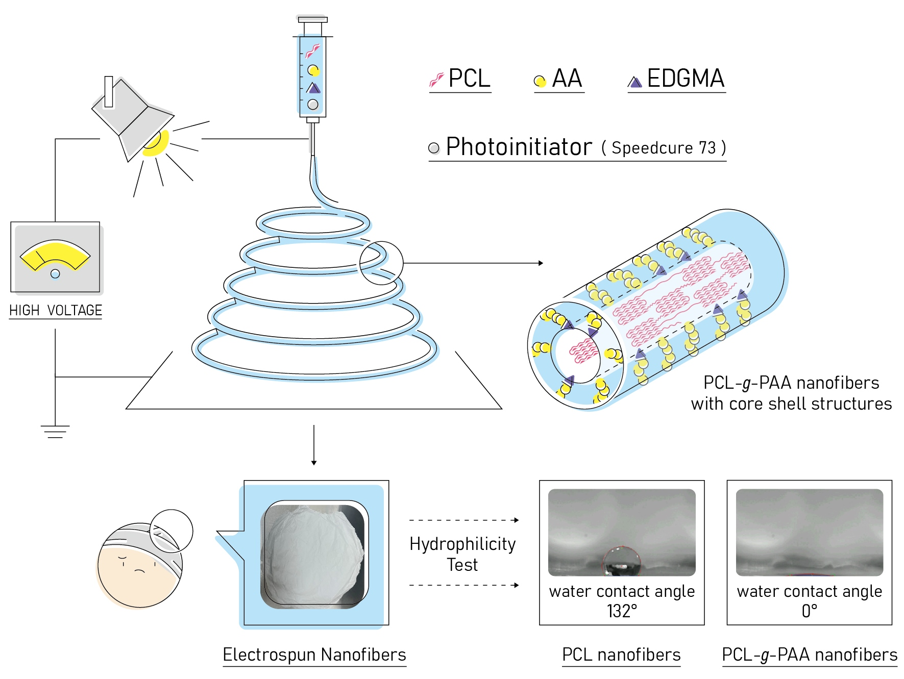

Scholarly article
Microstructure and Biological Properties of Electrospun In Situ Polymerization of Polycaprolactone-Graft-Polyacrylic Acid Nanofibers and Its Composite Nanofiber Dressings
Author affiliations and roles
- a1 Department of Fiber and Composite Materials, Feng Chia University, Taichung 40724, Taiwan; yijenhua@gmail.com (Y.-J.H.); judy91206@gmail.com (R.-Y.L.); skyforest1316@gmail.com (C.-H.Z.)
- b2 Center for Green Technology, Chang Gung University, Taoyuan 33302, Taiwan; weihao.chiu@gmail.com
- cChang Gung University of Science and Technology
- d3 Department of Chemical and Materials Engineering, Chang Gung University, Taoyuan 33302, Taiwan
- e4 Department of Pediatrics, Chang Gung Memorial Hospital, Linkou, Taoyuan 33305, Taiwan
Polymers, 13, 4246 (2021).
Research topic: Other Materials & Photonics
Abstract
In this study, polycaprolactone (PCL)- and poly(acrylic acid) (PAA)-based electrospun nanofibers were prepared for the carriers of antimicrobials and designed composite nanofiber mats for chronic wound care. The PCL- and PAA-based electrospun nanofibers were prepared through in situ polymerization starting from PCL and acrylic acid (AA). Different amounts of AA were introduced to improve the hydrophilicity of the PCL electrospun nanofibers. A compatibilizer and a photoinitiator were then added to the electrospinning solution to form a grafted structure composed of PCL and PAA (PCL-g-PAA). The grafted PAA was mainly located on the surface of a PCL nanofiber. The optimization of the composition of PCL, AA, compatibilizer, and photoinitiator was studied, and the PCL-g-PAA electrospun nanofibers were characterized through scanning electron microscopy and H-1-NMR spectroscopy. Results showed that the addition of AA to PCL improved the hydrophilicity of the electrospun PCL nanofibers, and a PCL/AA ratio of 80/20 presented the best composition and had smooth nanofiber morphology. Moreover, poly[2 -(tert-butylaminoethyl) methacrylate]-grafted graphene oxide nanosheets (GO-g-PTA) functioned as an antimicrobial agent and was used as filler for PCL-g-PAA nanofibers in the preparation of composite nanofiber mats, which exerted synergistic effects promoted by the antibacterial properties of GO-g-PTA and the hydrophilicity of PCL-g-PAA electrospun nanofibers. Thus, the composite nanofiber mats had antibacterial properties and absorbed body fluids in the wound healing process, thereby promoting cell proliferation. The biodegradation of the PCL-g-PAA electrospun nanofibers also demonstrated an encouraging result of three-fold weight reduction compared to the neat PCL nanofiber. Our findings may serve as guidelines for the fabrication of electrospun nanofiber composites that can be used mats for chronic wound care.
Graphical Abstract

Keywords
OpenAlex citation history
Citations by year
- 02021
- 42022
- 62023
- 52024
- 32025
- 02026
View citation counts as a table
| Year | Citations |
|---|---|
| 2021 | 0 |
| 2022 | 4 |
| 2023 | 6 |
| 2024 | 5 |
| 2025 | 3 |
| 2026 | 0 |
OpenAlex citing works
Articles citing this work
18 citing articles with DOI, from 18 records indexed by OpenAlex.
Emerging trends in photo-crosslinkable polymeric biomaterials in regenerative medicine ↗
Materials Today Chemistry · vol. 50, pp. 103172, 2025
Mechanically reinforced hydrogel with nanofibers through plasma-driven PCL fibers surface treatment ↗
Reactive and Functional Polymers · vol. 218, pp. 106534, 2025
Preparation Methods and Multifunctional Applications of Functionalized Electrospun Nanofibers for Biomedicine ↗
Nanomaterials · vol. 15, no. 12, pp. 909, 2025
DOI: 10.3390/nano15120909
Effect of Graphite Dopant in Polyvinylidene Flouride (PVDF) Electrospun Composites ↗
International Journal of Nanoelectronics and Materials (IJNeaM) · vol. 17, no. December, pp. 347-353, 2024
Functionalized polymeric biosensors via electrospinning assisted by controlled radical polymerization ↗
Journal of Materials Science · vol. 59, no. 39, pp. 18316-18337, 2024
Enhancing cancer care with improved checkpoint inhibitors: a focus on PD-1/PD-L1 ↗
PubMed · vol. 23, pp. 1303-1326, 2024
Preparation of surfactant‐assisted polycaprolactone/κ‐carrageenan nanofibres ↗
Polymer International · vol. 73, no. 12, pp. 1041-1050, 2024
DOI: 10.1002/pi.6683
Polycaprolactone/polyacrylic acid/graphene oxide composite nanofibers as a highly efficient sorbent to remove lead toxic metal from drinking water and apple juice ↗
Scientific Reports · vol. 14, no. 1, pp. 4372, 2024
Polyacrylic Acid: A Biocompatible and Biodegradable Polymer for Controlled Drug Delivery ↗
Polymer Science Series A · vol. 65, no. 6, pp. 702-713, 2023
Recent Trends in Electrospun Antibacterial Nanofibers for Chronic Wound Management ↗
Current Nanomedicine · vol. 13, no. 3, pp. 159-187, 2023
Recent Advances in Electrospun Fibers for Biological Applications ↗
Macromol—A Journal of Macromolecular Research · vol. 3, no. 3, pp. 569-613, 2023
Recent Advances on Electrospun Fibers for Biological Applications ↗
Preprints.org · 2023
Development of electrospun filter with high efficiency to reduce disturbance on gas detection in dusty environments ↗
Journal of Applied Polymer Science · vol. 140, no. 31, 2023
DOI: 10.1002/app.54113
Microstructure, Physical and Biological Properties, and BSA Binding Investigation of Electrospun Nanofibers Made of Poly(AA-co-ACMO) Copolymer and Polyurethane ↗
Molecules · vol. 28, no. 9, pp. 3951, 2023
Flexible Multifunctional Self-Expanding Electrospun Polyacrylic Acid Covalently Cross-Linked Polyamide 66 Nanocomposite Fiber Membrane with Excellent Oil/Water Separation and High pH Stability Performances ↗
Sustainability · vol. 14, no. 21, pp. 14097, 2022
DOI: 10.3390/su142114097
Biodegradable Polymer Matrix Composites Containing Graphene-Related Materials for Antibacterial Applications: A Critical Review ↗
Acta Biomaterialia · vol. 151, pp. 1-44, 2022
Incorporation of Mycobacteriophage Fulbright into Polycaprolactone Electrospun Nanofiber Wound Dressing ↗
Polymers · vol. 14, no. 10, pp. 1948, 2022
High efficiency biomimetic electrospun fibers for use in regenerative medicine and drug delivery: A review ↗
Materials Chemistry and Physics · vol. 279, pp. 125785, 2022